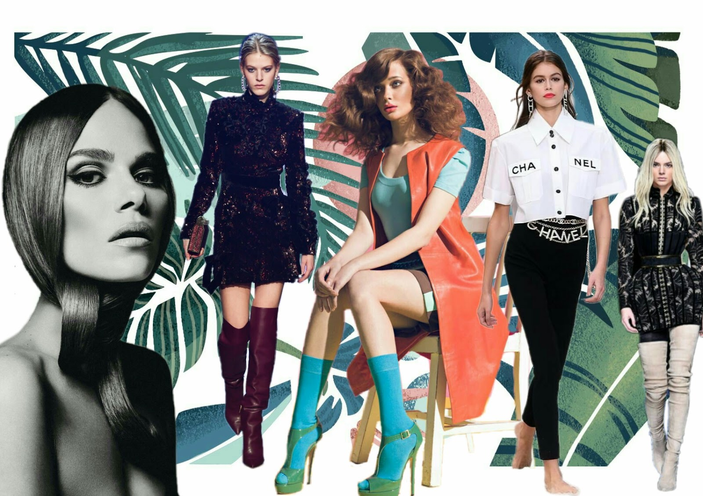
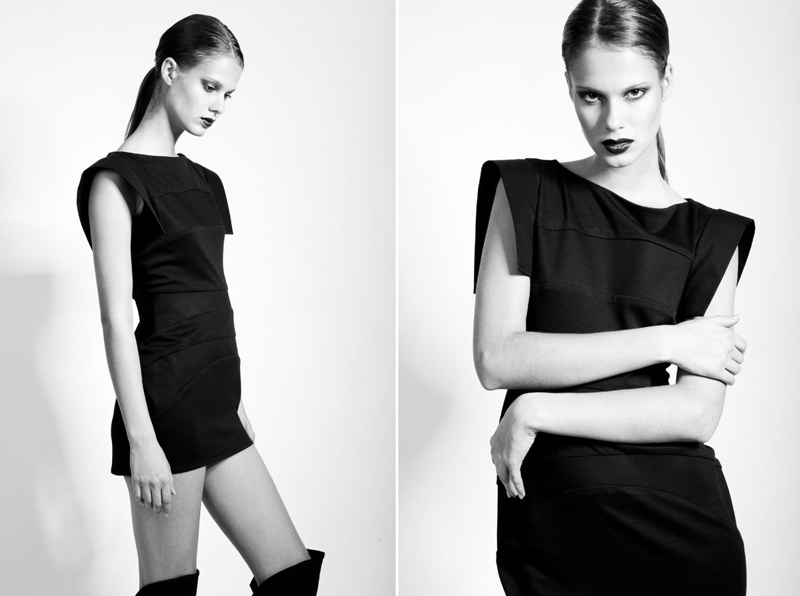
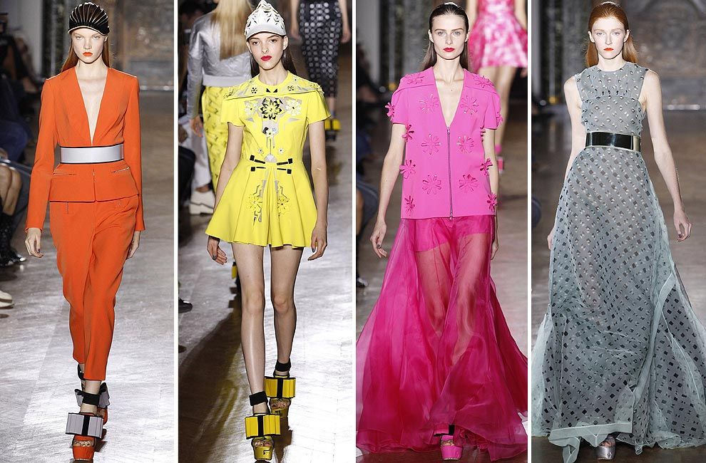

Do francês mode, uma moda é um uso ou um costume (hábito) que está em voga numa determinada região,
durante um certo período. Trata-se de uma tendência adoptada por uma grande parte da sociedade, geralmente associada ao vestuário
A moda pode-se definir como sendo um mecanismo que regula as escolhas e as preferências das pessoas, já que, devido a uma espécie de pressão social,
indica-lhes aquilo que devem consumir, utilizar, usar ou fazer.
A moda torna-se um hábito repetitivo que identifica um sujeito ou um grupo de indivíduos.
Por: Adriely Queiroz
Ler mais

A moda surgiu em meados do século XV no início do renascimento europeu.
A partir da Idade Média, as roupas eram diferentes seguindo um padrão que aumentava segundo a classe social,
houve até leis que restringiam tecidos e cores somente aos nobres.
A burguesia que não era nobre, mas era rica, passou a imitar o estilo nobre das roupas iniciando um processo de grande trabalho aos costureiros que a partir de então,
eram obrigados a produzirem diferentes estilos para diferenciar os nobres dos burgueses.
Por: Adriely Queiroz
Ler mais

Os maiores estilistas do mundo são figuras que transcendem a indústria da moda, deixando uma marca
indelével na história e influenciando o estilo de vida global. Eles são reconhecidos por sua criatividade, inovação e habilidades
de design que redefiniram a moda, moldando a maneira como as pessoas se vestem e expressam sua identidade através da roupa.
Por: Adriely Queiroz
Ler mais